Projects > Unis Vert Marbourg
Unis Vert Marbourg
The project "Unis Vert Marbourg" was created in response to a challenge launched by the city of Poitiers: "Let's experience Europe on the road to Poitiers-Marburg." This challenge was held for the first time as part of the 60th anniversary of the twinning between Poitiers and Marburg. The goal was to imagine and organize a trip to Marburg that would symbolize Franco-German friendship using alternative means of transport instead of planes and cars.
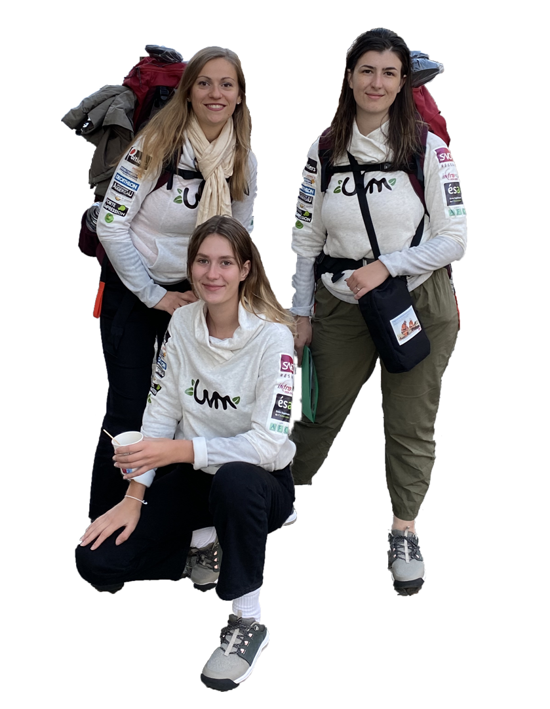
We carried out this project as a team of three, with two other students from ESA (Groupe AFC). In short, the idea was to travel with a low carbon footprint through 8 cities over 8 days while participating in activities related to ecology and Franco-German friendship. It was the first edition of the challenge, and we became its ambassadors. The project established a partnership between our school and the city of Poitiers. Since then, the project has become an annual event, with students from different classes continuing to take part.
Professionally, Unis Vert Marbourg is my first experience as a project manager. I was able to put to good use everything I learned in training. In a multi-faceted way, I had to manage: the project and team framework, the planning of the various dates, the management of administrative processes, the organization of project meetings and the drafting of minutes, the creation of illustrations and some communication supports, the drafting of summaries to be sent to potential partners, the creation of project monitoring indicators (Pert, Gantt, dashboard), the realization and monitoring of the budget.

Some photos


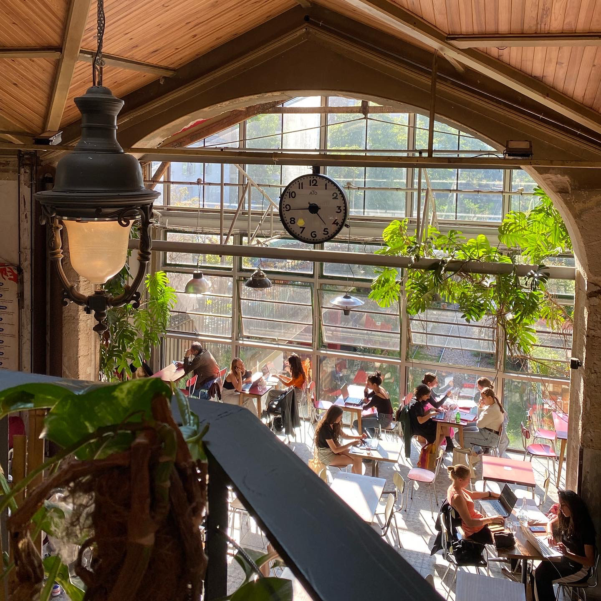


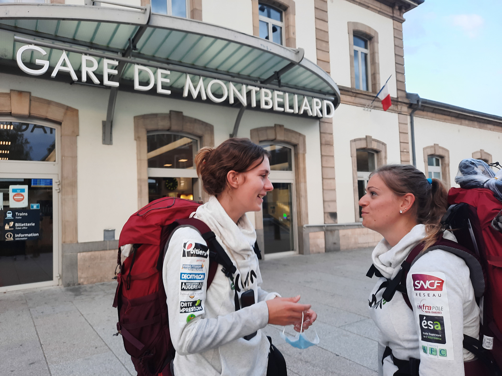


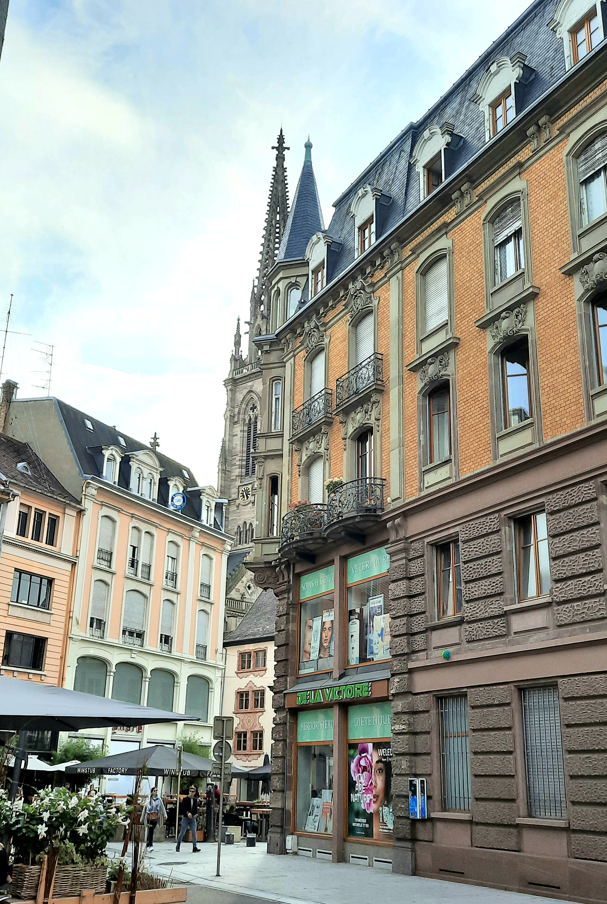
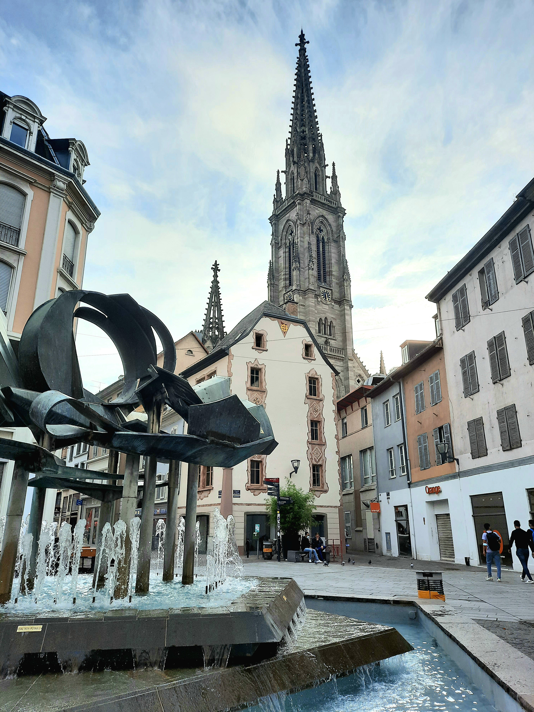

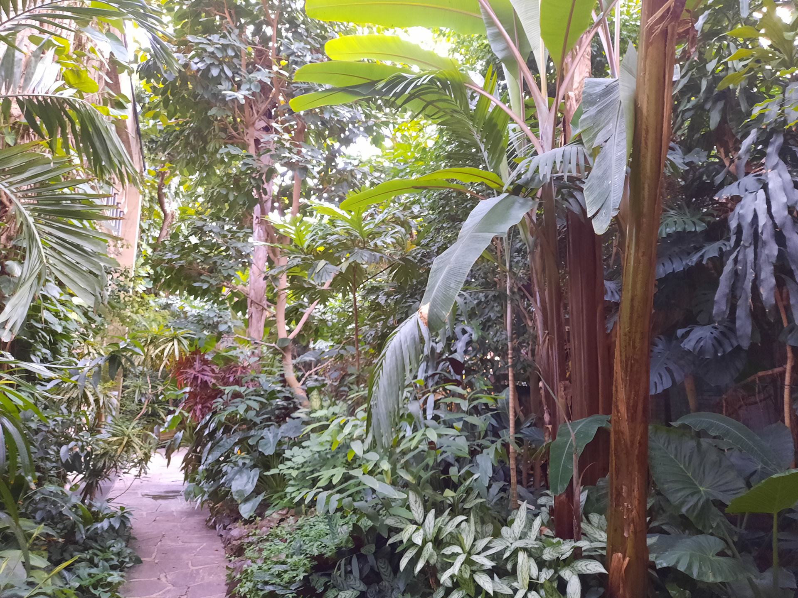
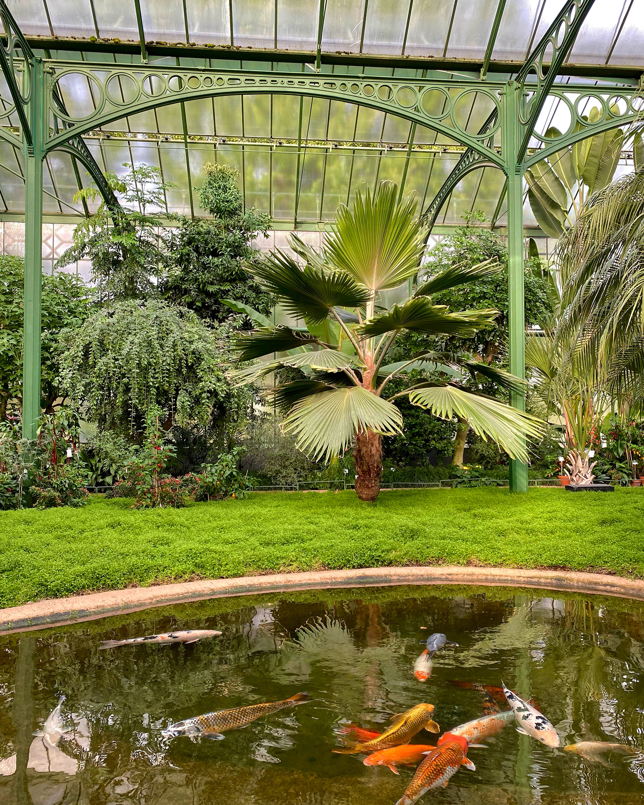
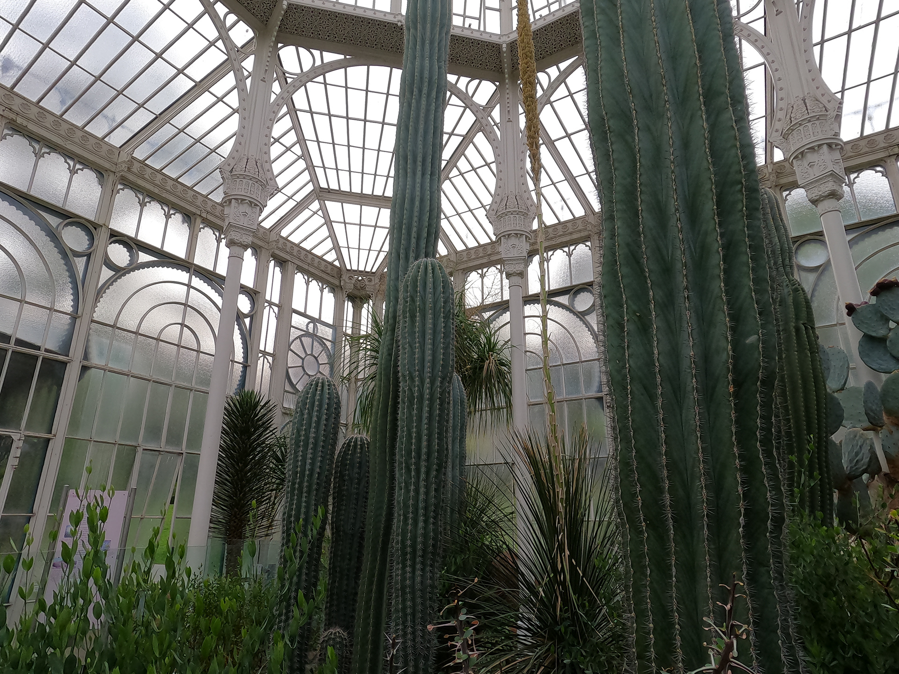


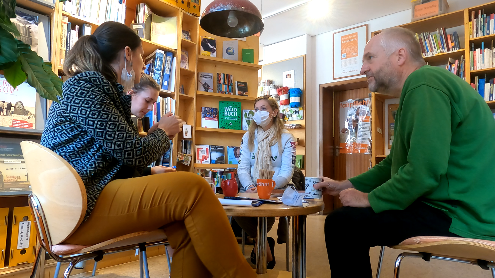

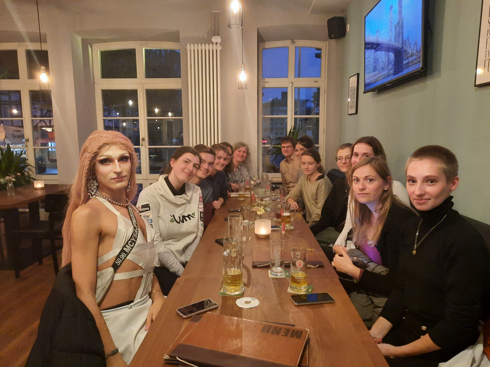
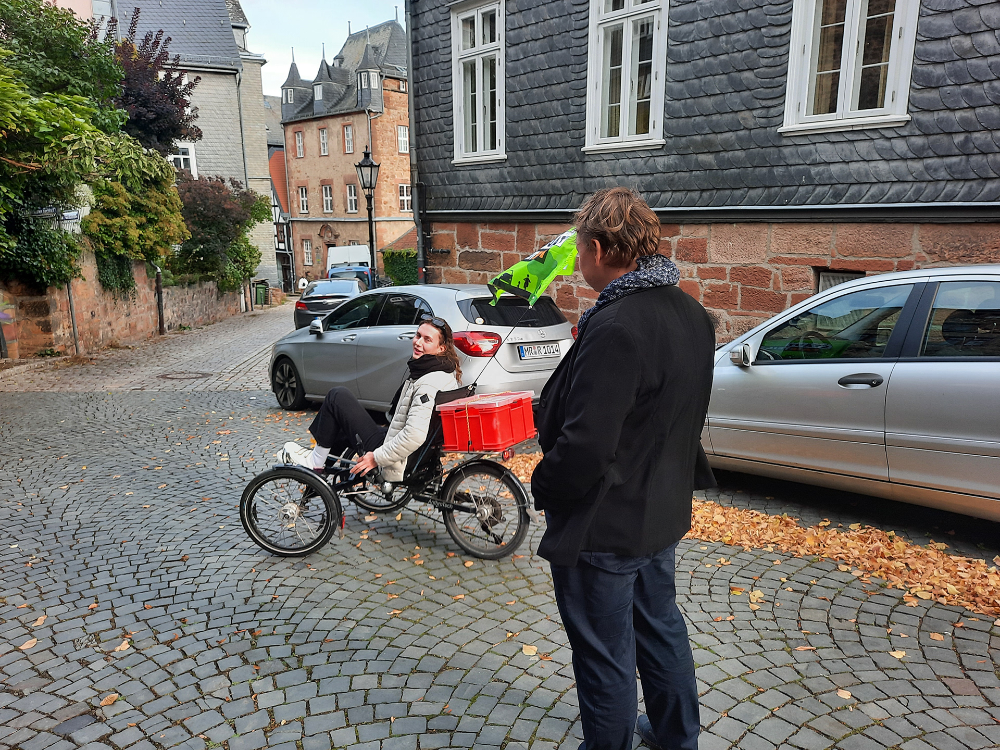
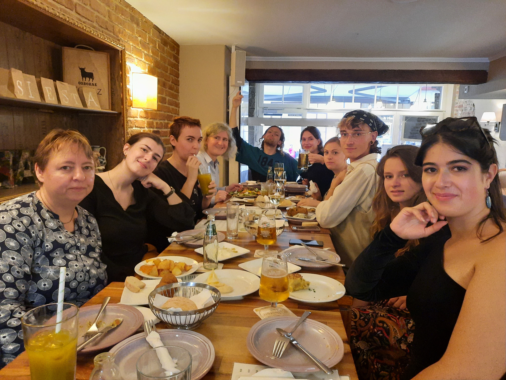
The project was centered on encounters and discoveries, with enriching exchanges with players committed to developing eco-responsible practices, elected officials and local residents. Our adventures were filmed and presented at a closing event.
The city of Poitiers organized a press conference and photo shoots to promote our initiative. We also took part in a radio show with the mayor of Poitiers, a first for our team.
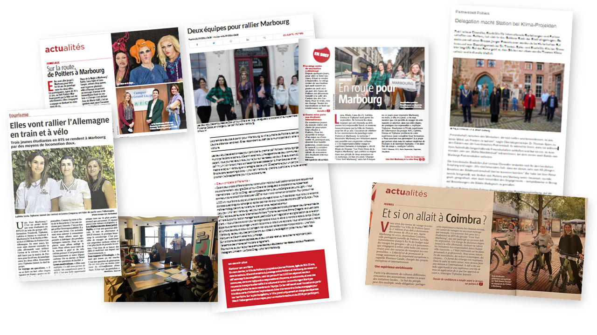
Prospecting for partners was crucial in financing the project, which cost €4,700. We organized a cocktail party to showcase partners and facilitate links between them. We also organized a cocktail party to raise the profile of our partners and enable them to meet each other and forge partnership links.
Partners
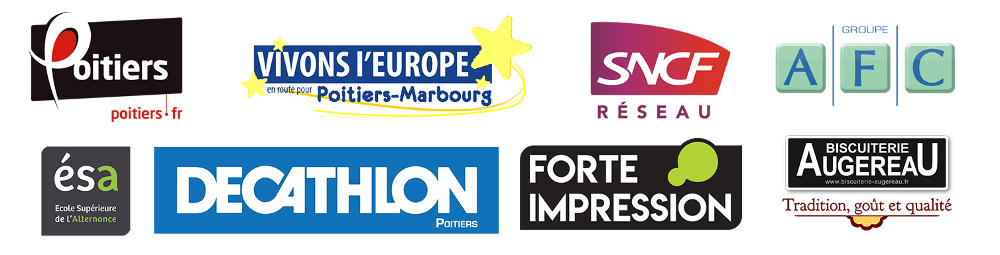